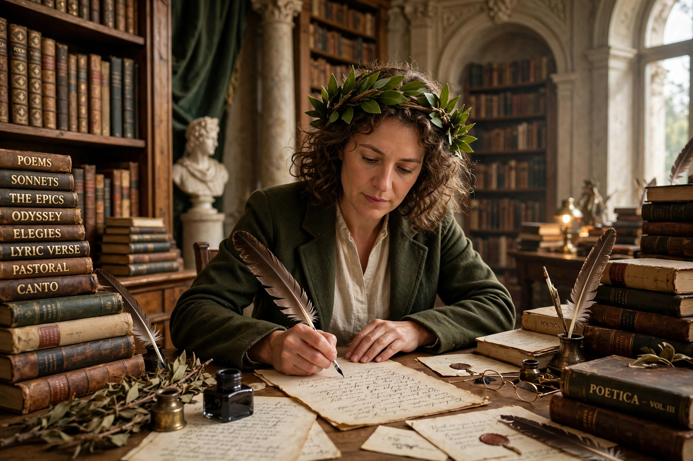

A poet laureate is a poet officially appointed by a government or conferring institution, typically expected to compose poems for special events and occasions. The tradition derives from the laurel wreath of ancient Greece and Rome.
| Poet Laureate | |
|---|---|
 |
The British Poet Laureate is appointed by the monarch on the advice of the Prime Minister. John Dryden was first formal holder (1668); holders since include Wordsworth, Tennyson, John Betjeman, Ted Hughes, Carol Ann Duffy and Simon Armitage (appointed 2019, ten-year term).
The US Poet Laureate (Poet Laureate Consultant in Poetry to the Library of Congress) serves a one-year term; recent holders include Ada Limón, Joy Harjo, Tracy K. Smith and Robert Hass. Many states and cities also appoint laureates.
Canada, Ireland, New Zealand and others maintain similar posts, sometimes parliamentary or national laureates.